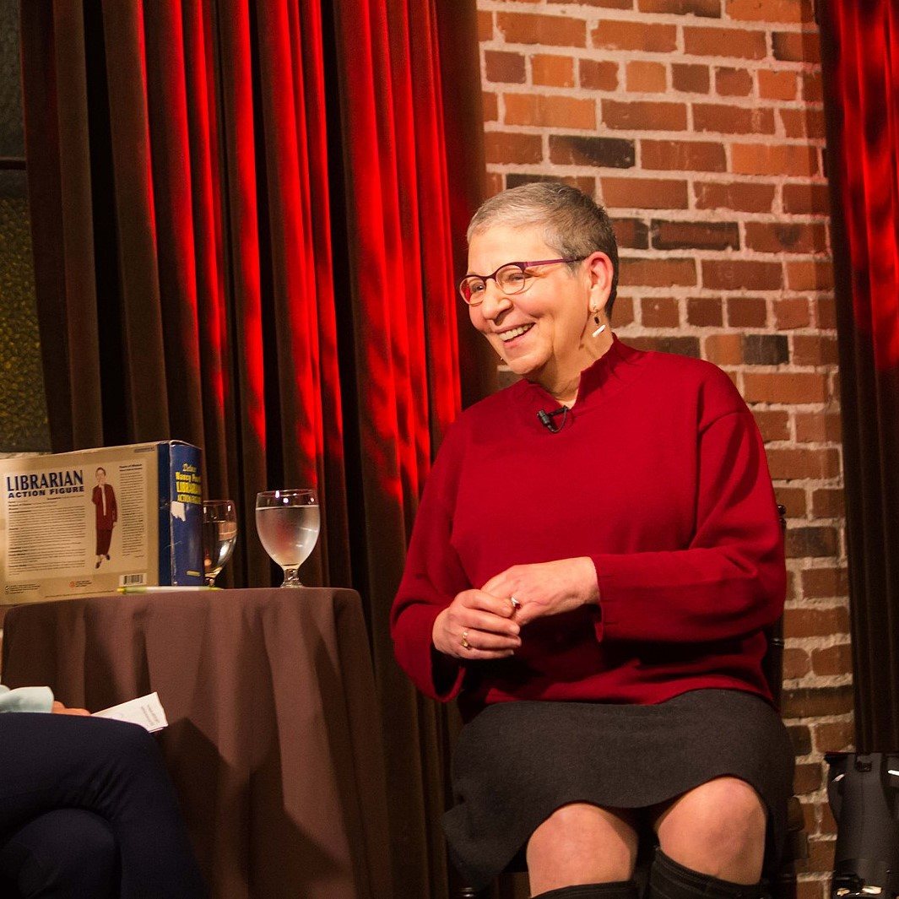
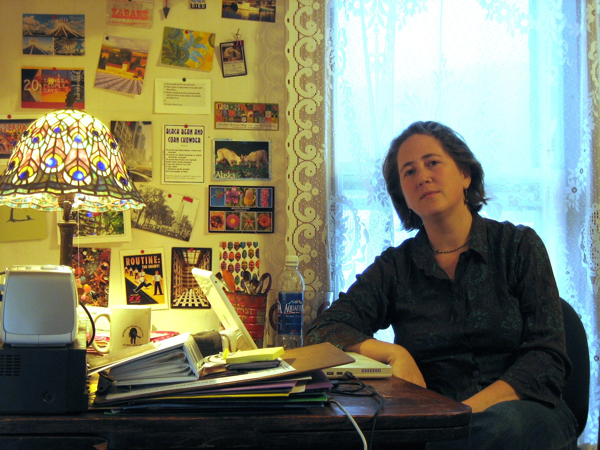

Carla Hayden is the current Librarian of Congress (the first librarian to be appointed to that post in sixty years, and the first woman and African American to ever have the job!) she received her degrees in Library Science from the University of Chicago Graduate Library School.
Hayden has worked in the Chicago Public Library system, taught at the University of Pittsburgh School of Information Sciences, and served as president of the American Library Association. From 1993-2016, she served as director of the public library system in Baltimore, Maryland. She received national attention for her decision to keep the libraries open during the citywide protests that happened after the 2015 death of Freddie Gray.
She was nominated as the fourteenth Librarian of Congress in 2016. In his press release, Barack Obama said that "Hayden has devoted her career to modernizing libraries so that everyone can participate in today's digital culture. She has the proven experience, dedication, and deep knowledge of our nation's libraries to serve our country well and that's why I look forward to working with her in the months ahead." As Librarian of Congress, Hayden hopes to increase public engagement with Library of Congress materials through digitization and traveling exhibits.
Carla Hayden: a true badass. For more, check out the links below.
 